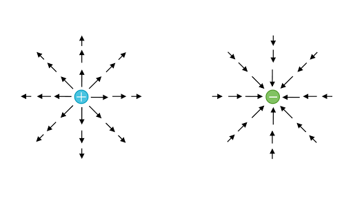

Es el estudio de propiedades e interacciones entre los cuerpos electrizados, pero en reposo.
Todo va a tener que ver con el "Electron", y las propiedades que genera en los cuerpos.
Es una magnitud que nos va a indicar el exceso o defecto de electrones, que se manifiesta de una interaccion.
Si hay un exceso de electrones por lo tanto esta cargado negativamente, si hay un defecto de los mismos entonces esta cargado positivamente siempre hablando de particulas.
| Particula | Carga | Masa |
|---|---|---|
| Electrón | −1.6x10−19 C | 9,1x10-31 kg |
| Protón | −1.6x10−19 C | 1,67x10–27kg |
| Neutrón | 0 | 1,67x10–27 kg |
Todo sera estudiado en referencia al "Electron", entendido como la interaccion electronica entre dos cuerpos.
La carga de un cuerpo puede ser solamente multiplo entero de la carga de un electron.
La carga total de un sistema aislado permanece constante. nose crea ni se desruye, se transmite o transforma.
La carga de una particula permanece igual sin importar la velocidad con la que se mueve.
Cargas de distinto signo se atraen y de igual signo se repelen.
(Ley de Coulomb)
La fuerza de atraccion o repulsion electrostatica son directamente proporcionales al producto de sus cargas e inversamente proporcionales al cuadrado de la distancia que las separa.
Datos:
K= Constante Coulomb 9x109
| Datos | Nombre | U. de medida |
|---|---|---|
| F | Fuerza | [N] (newton) |
| Q1 y Q2 | Cargas | [C] (coulomb) |
| d | Distancia | [m] (metro) |
Es la region del espacio en donde una carga electrica deja sentir su influencia, efecto.
Este campo funciona como un transmisor mediante el cual una carga interactua con otra que esta a su alrededor.
Para medir una interaccion se utiliza una carga de prueba la cual casi siempre es positiva.
Si dicha carga de prueba sufre repulsion o atraccion, significa que dicho punto esta afectado por el campo.
Sirve para cauntificar la fuerza, pero con la que actua el campo electrico sobre un cuerpo cargado.
En donde:
E=[N/C](Newton/Coulomb)
Reemplazando los valores de F en la formula obtenemos:
Si hay varias cargas se va a generar mas de un campo, para calcular la Eresultante se realiza la sumatoria.
Sirven para representar el campo electrico.
Comienzan con las cargas positivas y terminan en las negativas. El numero de lineas que abandonan una carga puntual positiva o entra en una carga negativa es proporcional a la carga.
El vector campo electrico es tangente a las lineas de fuerza.
Salen simetricamente y nunca de cortan